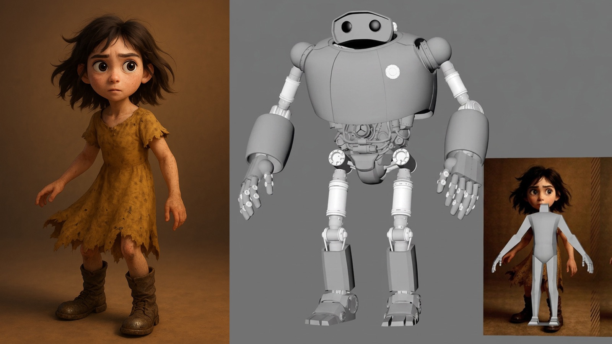
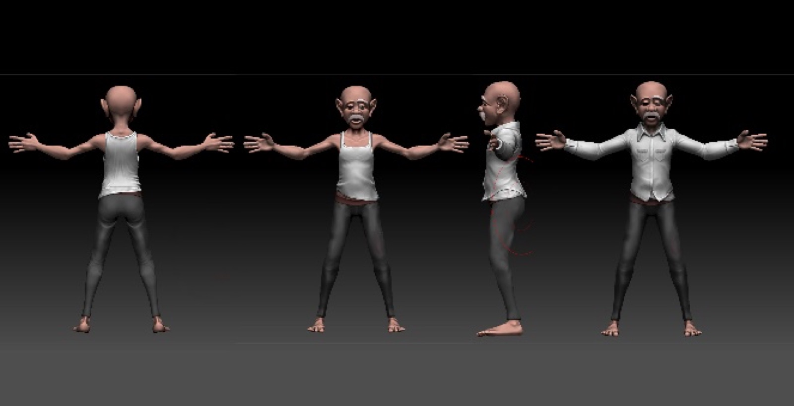
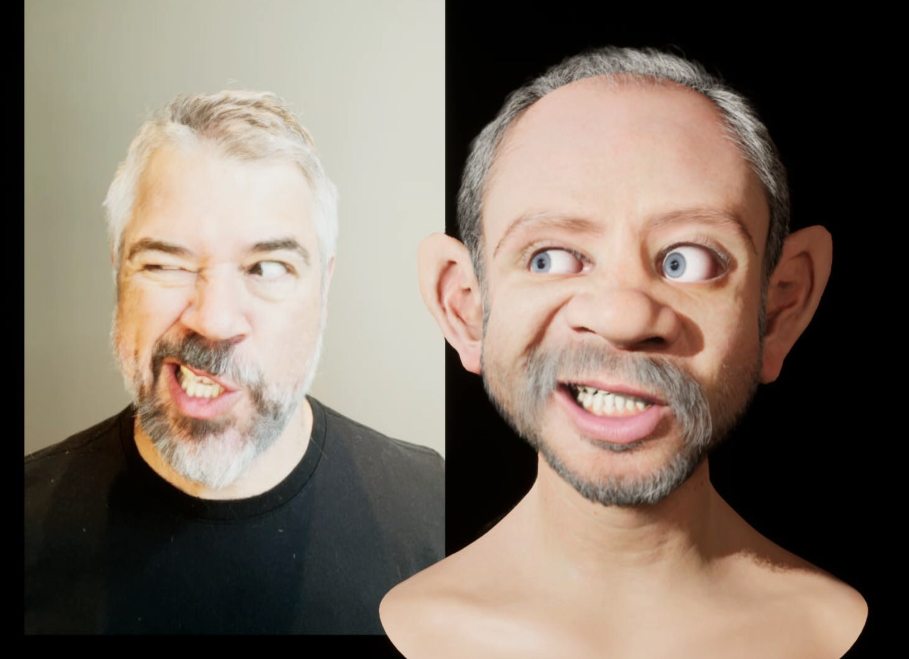
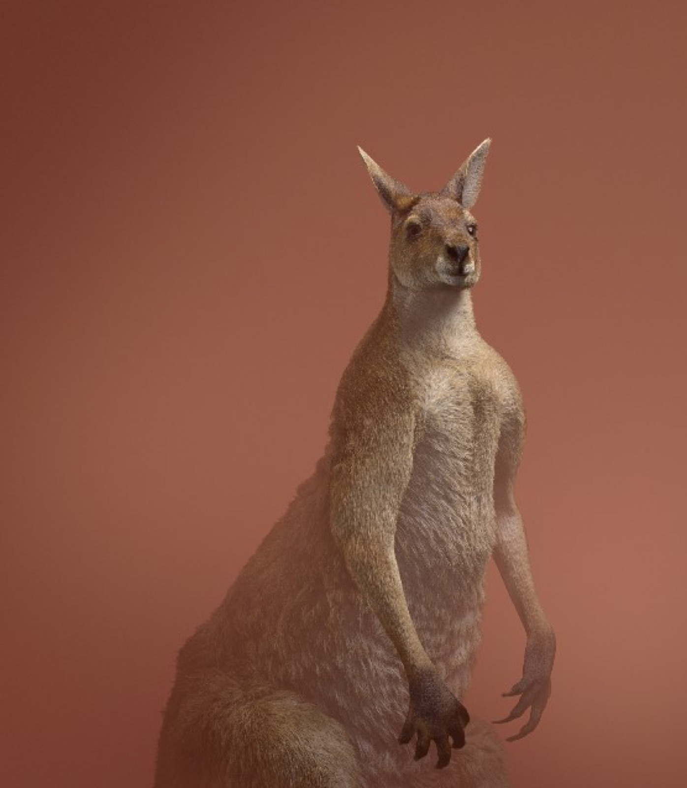
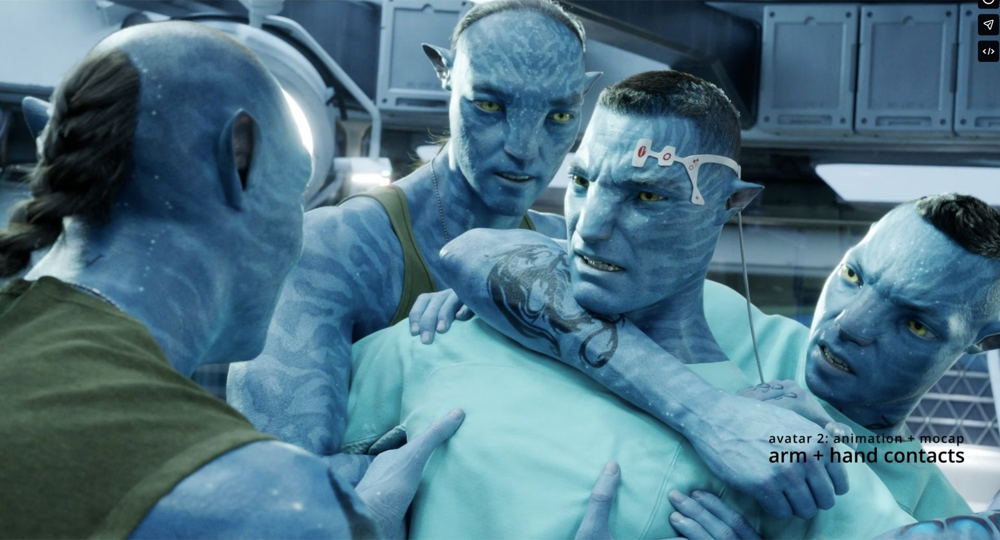
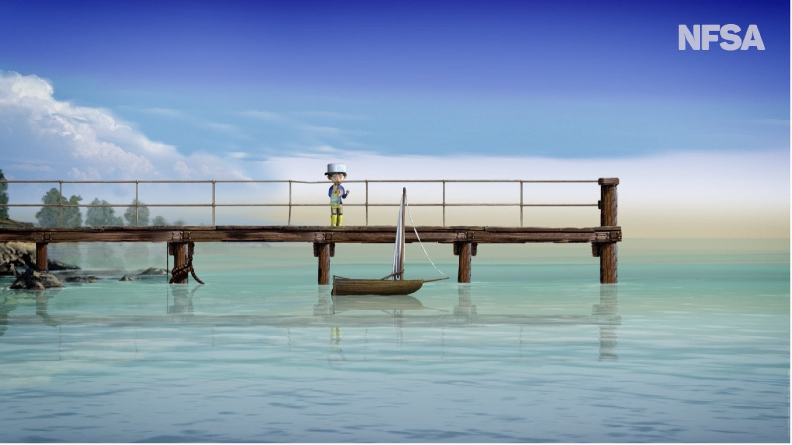

Project description
Introduction
This project will create a new production pipeline for animation education that enables sharing and review and manages data and asset compatibility across a range of applications used in RMIT's Animation program. Unreal Engine is an integrated hub within the system as the environment for real time rendering, interaction, VR and multi-platform delivery. The pipeline also handles the exchange of assets with generative tools. Work that is compatible across applications can be released in more than one form, so a project made for linear film can also become a real-time or interactive work. The pipeline will be built and tested during the production of three staff-led production projects. The tools, templates, documentation and research findings produced will be shared via industry and academic conferences and journal articles, and the code will be published open source.
The pipeline will be integrated into RMIT's Bachelor of Animation program, initially in the 3D animation major and VFX minor. Each year this program takes large cohorts of new users through various animation projects, toward industry-level practice, while maintaining a commitment to equitable learning. In this setting, the pipeline returns time to creative work and widens the range of projects students can attempt. For staff, the pipeline provides a dependable structure for teaching production.
This proposal describes the pipeline, the three pilot projects (enabling its design and testing), its integration with Unreal Engine and with generative tools, its place in the program's teaching, an eighteen-month development plan with an indicative budget, and the research to be undertaken during the process. Project outcomes include a working pipeline, three finished productions, and a fully specified and documented model that other institutions can adopt.
Consistently ranked #1 in Oceania for Animation since 2020.
The need
A commercial pipeline's primary goal is data management, communication, efficiency, profitability, and creativity. In a university Animation program using a studio model of education, students and faculty handle both production management and project creation, as well as pedagogy and the craft of animation. In addition to data management and communication, the role of a "pedagogical pipeline" is to create a fertile ground for skills progression, creative collaboration, building a community of practice and equitable learning. The pipeline must support work that is still exploring production options and artists who are still learning their craft.
Time spent on data transfer, conforming files etc is time not spent on performance, timing, design, and storytelling. The time and cognitive cost also shape what students attempt, the range, diversity, complexity, and scale of their projects. Faced with a difficult transfer between two applications, many students will use the tool already configured for them and reduce the scope of the work to suit it, limiting their creative expression to toolset boundaries — often simply defaulting to the familiar. Projects that cross between real time rendering, generative processes, hand drawn 2D, stop motion, simulation and interaction become impractical for reasons unrelated to the student's ability. And this limits creativity.
"The mind takes the shape of what it rests on."
Building a pedagogical and production pipeline
The proposed system is designed to reduce the mental load of data management and troubleshooting for students and staff, improve access and learning for Unreal Engine, build a community of practice, support peer review, creative collaboration and facilitate sharing of assets workflows and inspiration across the Animation Program.
It achieves this via three key aspects of the design:
- Linking and integrating processes, filetypes and workflows across a multitude of animation production software with a central online review system, allowing students to publish work for review by peers and teachers directly from Unreal Engine to be reviewed online.
- Developing and supporting tools within Unreal Engine to facilitate the transfer, iteration and tracking of assets and motion created by RMIT Animation cohorts.
- Partnering with Unreal Engine to support staff and students learn, engage and create work using Unreal Engine.
These goals align with new curricular offerings currently in development at RMIT, where students operate in a simulated studio environment, accessing project assets and other resources that are already structured correctly and begin their work. Whether the student is operating as animator (earlier years) or director (later years), they are not required to wade through the quagmire of production management in order to begin their work and learning.
The pipeline development process will include the creation of custom plugins and tools for each application to handle import, export and project setup inside Unreal Engine, giving the students access to professional grade toolsets for collaboration that are missing from the default setup in most software.
Unreal Engine integration
Unreal Engine will provide a hub for animation, rendering, VR, interaction, games and multi-platform immersive projects. The pipeline will allow students to work either exclusively in Unreal Engine or in any combination of software used by students at RMIT.
Combined with LLM use inside Unreal Engine, students will be supported to develop their own tools and workflows unique to their own productions, freeing students from technical hurdles and fostering a diverse range of highly creative and original works and tools — opening up the possibility of Unreal Engine playing a key role in student projects throughout the program.
Generative tools
Generative AI is becoming an integrated part of animation production, used for pre-production, asset and motion creation, effects and, in some cases, final imagery. These tools often have technical requirements that existing pipelines were not designed for: prompt and context material treated as production assets, model and node configurations that must be versioned, training datasets built from engine renders, or outputs that need to return to the scene they came from. The pipeline manages these as project data, with the same storage, permissions and review as any other asset.
Integration with Unreal Engine runs in both directions. The pipeline will use an MCP server for Unreal Engine so that engine state, cameras, lighting and scene structure can serve as context and control input for generative processes, and so that generated meshes, textures, motion and image sequences arrive in the engine without manual handling. Existing open-source generative tools (e.g. ComfyUI custom nodes) are connected through the same routing. Newer engine capabilities that are not yet in mainstream production, such as gaussian splat rendering, become usable in student and staff projects once assets can move into the engine. The pilot project Maintenance is where this work is developed and tested.
The tools available for this kind of work will change substantially over an eighteen-month build. The pipeline is designed to route data between the engine and whatever generative and agentic tools are current, so that new options, including any released by Epic, can be adopted and aligned on release.
The pipeline software itself will be developed with a dedicated agentic build system, in which the team specifies and reviews, and coding agents produce and test the tools. This is a practical decision for a small team with an eighteen-month build, and the approach will be documented and published with the rest of the project.
Supporting our core principles of creativity and pedagogy, these tools allow students to focus on the creative aspects of AI-integrated production, without the time cost of deep technical setup — but also avoiding the allure of GenAI "shortcuts" in the creative process. Students in the program work with these methods as a normal part of production; graduates trained in this way will carry integrated generative practice into industry as a native skill, at a point when much of the sector is still adapting to it.
Curricular integration
Consistently ranked #1 in Oceania by Animation Career Review since 2020, RMIT's Animation program is widely regarded as a top-ranking animation program in the Asia Pacific. The program has a large student cohort of approximately 500 students spanning 3 years.
Our program aims to be software agnostic and/or to adopt the software most relevant to our graduates' industry opportunities. Currently, Unreal Engine is used at various levels of our program, such as in courses dedicated to environment design for VR and in advanced character animation and major student productions, where we are integrating MetaHuman rigs as the basis for work across various production tools. We are tracking developments of the engine to see where it offers opportunities for integration across our 3D animation and VFX offerings and aim to provide opportunities for students to create immersive projects across a variety of tools and software. This project aims to broaden our software adaptability across our program, with Unreal Engine as an integrated production hub.
Development plan
The project is currently in the planning, specification and testing stage. We have rolled out the first round of software plugins and tools which support student submissions from animation production software to a cloud based review site. The positive impact of these initial tests on student learning and creativity is very inspiring.
| Phase | Months | Deliverable |
|---|---|---|
| 1. Core system | 1–4 | Admin and teaching interfaces, template engine, permissions, project instantiation, storage integration |
| 2. Transfer layer | 3–8 | Conversion and conform services, automated export presets, review integration |
| 3. Application plugins | 5–12 | Unreal, Maya, Houdini, ZBrush, Substance, Toon Boom and ComfyUI plugins for native import, export and project setup, compatibility and function mapping |
| 4. Production trial | 8–15 | The three pilot productions. Live testing the system, with iteration of system functions against production use |
| 5. Curriculum rollout | 12–18 | Deployment across 3D animation program offerings, teaching staff training, documentation. New course integration review mid 2027 |
| 6. Open-source release and project completion | 15–18 | Public repository, documentation, packaged plugins, published findings. Completion of test projects and first student works |
Outcomes and impact
Scale
Serves ~150 students in 3D animation and VFX, extending to the wider ~500-student animation program as it covers 2D workflows. Future rollout reaches games (~200 students) and masters (~80) programs — a total addressable base of ~750 active users.
Equitable learning
Reducing production-management overhead lets neurodiverse and other students work to their strengths in creative, intuitive and performance-based work, supporting teamwork, specialisation and a wider range of learning modes.
Community & field contribution
Released open source — application, plugins, templates and documentation — so schools, small studios and independent teams can adopt it directly. Findings, including unsuccessful approaches, are published throughout.
Internally, RMIT will consider providing additional funding for the equitable-learning dimension of the project through an internal equitable learning grant (subject to review and alignment).
Publication targets include SIGGRAPH and SIGGRAPH Asia, ARS Electronica: Expanded, the Society for Animation Studies Annual Conference, CONFIA, and scholarly journals in Animation Studies and Animation Production including Animation and Animation Practice Process & Production. The three pilot productions provide worked examples of the pipeline in production use, and each aims for international exhibition and screening at major animation festivals, museums and gallery exhibitions.
Pilot projects
Developing three productions concurrently tests the pipeline against three distinct workflows and allows creative crossover, with techniques developed for one project adapted and implemented in the others.
Not Worth Fixing
Animated short film · Project lead: Pat SarellLogline: Living alone on an abandoned farm, a young girl's life is changed forever when she rebuilds and befriends a broken-down robot, until his failing battery forces them on a journey neither may survive.
Not Worth Fixing — Previs
A story about the kind of relationships that don't fit inside a family tree but shape us just as deeply. The mentors, neighbors, and unlikely companions who show up when we need them, ask nothing in return, and quietly change the course of a life. Anchored in a distinctly Australian landscape and told with warmth, humour and heartbreak, it's a film about the deep and often overlooked value of intergenerational connection — and how strangers become the family we choose.

Read the full story outline
- Somewhere in rural Australia a young girl struggles to survive on an abandoned farm until one day she stumbles on a broken down robot hidden in an overgrown sugarcane field.
- Isolated and alone she gives up her last remaining energy source to revive the hulking relic, repair and rehabilitate him. Replacing his broken foot with a tree stump, teaching him how to walk and bringing him into her world.
- Unsteady on his feet at first, the girl helps the ancient robot to walk and together they roam the farm, playing, exploring and adventuring further and further afield. Until one day they reach the edge of the farm.
- Unbeknownst to the girl the robot's battery is failing. Realising his time is limited and worried the girl will soon be on her own, the robot decides they must leave the farm and find people. But the girl won't go. "Mum said I have to wait here," she explains, standing her ground on the farm's boundary.
- Days pass, the robot's power dwindles and still the girl won't leave. In a last-ditch attempt the robot tells the girl about the sea. Captivated by the robot's description of the briny blue, she agrees to go, on the condition they return to the farm as soon as possible. Little does she know it will be a one-way trip.
- The next day they set out into the wilds, through thick bush and treacherous terrain. At first the girl is reluctant, always wanting to turn back, but the old robot keeps her going with kindness and patience. The further they go the more signs of life they see — kangaroos and possums watch them, echidnas and gang-gang cockatoos hide in the scrub.
- Over rivers and across the dunes the two friends travel. As the robot's power dwindles he struggles to carry on and the dynamic shifts between them — sensing something is wrong, the girl rallies the robot on. Trudging up a rocky hillside the robot stumbles and the girl runs to his aid. As he clambers to his feet, something in the air floods the girl's senses — she can smell the sea. A final burst of energy and the girl and the robot crest the hilltop, revealing a stunning ocean view. They've made it!
- By now the robot is barely able to walk, the girl knows he's dying. Together they rest on the cliff's edge. "I can't go on," the robot tells the girl, "you have everything you need. You are brave and smart and kind. You have to find people who will look after you." He points to some twinkling lights on the horizon — signs of life. The girl understands, but she can't leave.
- The sun sets and the girl sleeps at the robot's feet. She is fast asleep when his battery finally dies.
- The next morning the girl awakes. Dries her eyes, says goodbye and leaves.
- We stay with the robot, time speeds up. Seasons come and go. Decades pass. The ancient relic of a machine folds into the landscape, overgrown by weeds and scrub. He becomes a home for animals. A moss-covered mound.
- Out of nowhere, we hear the voices of children. A little girl and her brother scamper across the cliff top toward the robot's grave. A young woman, their mother, follows close behind. As the children play she approaches the robot's remains, sits quietly at his feet and signs "thank you."
Connection to the other projects
Animal Encounters and Not Worth Fixing take place in the same world, allowing people to interact and connect with Australian wildlife in an Australian environment, exploring corners of the farm and surrounding environment and focusing on Scout's relationship to the world around her. The animals created for Animal Encounters will become part of the short film using a combination of automated keyframe methodology and hand keyframe.
Connection to the pipeline
Not Worth Fixing is the pipeline's primary test bed for Maya-to-Unreal, Maya-to-ShotGrid, and Unreal-to-ShotGrid workflows, plus network asset publishing and scene-building across Unreal, Maya, Houdini and Blender — including asset transfer, motion data, and publish-and-review tools — built and proven against a real production, not a synthetic test case. The film's team spans students, industry artists, and RMIT staff working side by side, so the pipeline is tested against the full range of skill levels and working styles it needs to support in the classroom: a student animator publishing a shot for review, an industry mentor giving feedback from outside RMIT, a staff pipeline developer iterating on the tool the same week it's used in production.
This gives the project a dual role. As a training tool, students and staff learn the Maya-to-Unreal-to-ShotGrid workflow by using it on a real film with real deadlines, not a tutorial exercise. As a development and testing ground, every gap the production hits — a transfer that's too manual, a review step that's too slow — becomes the next thing the pipeline is built to fix, so the tools that reach the wider student cohort have already been proven under real production pressure, not shipped untested.
Connection to Unreal
Not Worth Fixing uses MetaHuman and Unreal Engine for rendering, with planned tool development inside Unreal Engine. The project functions as a direct R&D pathway for building staff capability and curriculum in Unreal and MetaHuman, not just a production pipeline for the film itself. Developing Scout, a customised MetaHuman character, and ATKS, a MetaHuman skeleton, has given RMIT staff hands-on, tested experience with the MetaHuman-to-Unreal workflow, which is now being converted directly into teaching material.
This is already shaping student practice, not just future curriculum: the R&D behind Scout and ATKS is the direct precedent for current third-year students now using MetaHuman in their major projects, giving the cohort a workflow that has already been proven in production rather than one being taught untested. Not Worth Fixing is already generating course material built around Unreal Engine, and its continued development will keep broadening both that material and the cohort's use of the engine.
Maintenance
Animated short film · Project lead: Andy BuchananAn experimental animated short film utilizing mainstream 3D animation processes, Unreal Engine, as well as integrated generative AI tools. Set in space, the film deals with themes of environment and sustainability — the "maintenance" of the failing ship as an analogy for human neglect of our own "spaceship," Earth. The main character experiences spatial and temporal inconsistencies, ultimately both barely surviving on an inhospitable planet, and concurrently exploding in the ship overhead, as it is revealed through metamorphic transitions that the character is the ship, and the engine of the ship is the planet. The film is experimental in process, narrative and experience.
Connection to the other projects
Like both other projects, the film places a high emphasis on environment (both digital and thematic). Character rigs from Not Worth Fixing inform the approach used for the main character in the film. GenAI processes developed for Maintenance will be used for previs elements in NWF, and multiple environment assets are shared across all three productions.
Connection to the pipeline and Unreal
In this project, keyframed animation is used for main action. The cartoonish character sculpt (ZBrush, Substance Painter, etc.) is adapted for integration with the MetaHuman system, which is utilized for facial capture, while other animation is created in typical animation software (Maya) and rendered through Unreal.
Additionally, GenAI tools are fully integrated in processes, including generation of previs, 3D assets, motion (via OpenPose), and final renders in some cases. GenAI will be used for creating metamorphic sequences, a key visual device of the film. This project includes adoption of existing GenAI tools for Unreal, such as open-source custom ComfyUI nodes for texture generation, as well as the creation of new custom nodes the project and pipeline requires. We will test the limits of the Claude MCP server for production of effects and other elements. Additionally, we plan to use Unreal Engine to develop (and release) new approaches in the creation of synthetic datasets for character consistency LoRA training — automating the creation of a dataset of expressions, poses, lighting conditions and angles of the MetaHuman-adapted character. This will enable us to seamlessly integrate generated content with Unreal renders, using each where it performs best.
These approaches require intensive data management, compatibility and automation of processes. The new pipeline provides a robust management system for handling this type of work, which involves new processes beyond those typically handled natively in production systems.


Research outcomes
In addition to the finished film, this project also supports an ongoing research agenda in animation studies and animation practice scholarship. To date, the Maintenance project and findings related to GenAI have been presented at numerous international conferences (Scanner: Animafest Zagreb; 2025 Annual Conference of the Society for Animation Studies). Further peer reviewed publications are planned, including:
- Context Engineering for Animation Generation — investigating the changing format, role and processes of pre-production materials as integrated context, rather than a discrete stage in production planning.
- Latent Space Interpolation — formalization of theoretical contribution on the aesthetics of morphing images created with GenAI models.
Animal Encounters
Interactive VR experience · Project lead: Gina MooreAn interactive VR work exploring animal performance, and dynamic (emerging and subsiding) worlds. The work features iconic Australian animals whose poses and actions come from keyframed animation combined with the viewer's own movement and gestures, so creature performance is always a little different from one encounter to the next.
The animals are rendered in a visual style ranging from stylised to photoreal, with detailed fur and skin that dissolves into polygons, lines, and particles during moments of "breakdown," triggered by the animals' and the viewer's movement and shifting attention. The landscape behaves in a similar way — trees, rocks, dirt and plants are always partial, building and unbuilding in response to viewer and animal attention and movement. The work rewards patience; the more slowly and closely the viewer attends, the more fully the animals and their world resolve, drawing the viewer into a slower, more careful way of seeing. The experience runs roughly five to ten minutes, offering close and fleeting encounters with four or five animals.

Connection to the other projects
A viewer of Animal Encounters takes the place of the girl from Not Worth Fixing, standing in the same rural setting. The VR work and the film share 3D assets, but each has a different focus: Not Worth Fixing primarily follows the human relationships (including a humanoid robot) while Animal Encounters turns its focus to the animals and the natural environment — two versions of the same farm, each looking at something different, with the shared world making the contrast between them meaningful.
Connection to the pipeline
This work is created primarily with Unreal Engine, Houdini and Maya (modelling in Maya, fur groomed in Houdini, keyframe animation authored in both Maya and UE, fur simulation and procedural movement added in Unreal). It tests the pipeline's ability to enable smooth Maya, Houdini and Unreal-focused workflows, driving the development of new tools where a transfer proves slow or manual. The shared purpose across all three productions is to lower the friction of moving between applications to encourage creative exploration, by staff and by students — as well as moving work between applications, pipeline tools will encourage sharing between people, foregrounding the importance of collaboration among team members including staff, students, and graduates.
Connection to Unreal
Built and delivered in Unreal Engine, with control rig, animation blueprints and state machines blending authored and viewer-driven movement in real time, driving the building and unbuilding of animals and environment responsively as the viewer looks and moves. As an interactive, immersive VR work, it draws on Unreal's real-time rendering to respond to the viewer moment by moment, rather than producing a fixed result — alongside the linear film, showing the same assets carried into an interactive, immersive form, a transmedia relationship in which shared assets reach audiences as both authored film and real-time experience.
Budget
All figures are indicative of pending processing through the RMIT project costing tool. The request is in USD. RMIT applies indirect costs at 30% of total funding awards, covering administrative, infrastructural equipment, and utility costs, since the project will rely heavily on these elements from the institution.
| Item | USD | Purpose |
|---|---|---|
| Animation and Games Technology Specialist | 21,340 | Leads system architecture, core software build, plugin development, and hosting/release engineering across all six build phases. $1,787 in 2026, $16,973 in 2027, $5,806 in 2028. |
| Technical development support | 42,680 | Build and test per-application plugins (Unreal, Maya, Houdini, ZBrush, Substance, Toon Boom, ComfyUI) and integrate the system into the three live productions. $3,573 in 2026, $33,945 in 2027, $11,613 in 2028. |
| Pilot production support (Not Worth Fixing, Maintenance, Animal Encounters) | 36,567 | Artist, music and sound costs for the three productions that build and test the pipeline in live production use. $12,177 per production, spent in 2027 during the production trial phase. |
| Community dissemination (travel and accommodation @50%) | 14,340 | Published findings, presentations, worked examples. |
| Direct costs | 114,927 | |
| RMIT indirect costs @ 30% | 34,478 | General administration, project and finance administration, space costs, utilities, salaries, workstations etc. |
| Total request | 149,405 |
| Source | Value | Note |
|---|---|---|
| RMIT academic staff time, three staff over 18 months | AUD 120,000 | Estimated cost based on fractions of FTE time commitment from 3 full-time RMIT staff to the project. |
| RMIT equitable learning grant | AUD 10,000 | Funds the accessibility dimension of the project. |
| Society for Animation Studies Animation and AI SIG grant | AUD 1,390 | Support for preparation and dissemination of findings related to AI applications in animation production. |
| Total | AUD 133,900 / USD 96,408 |
RMIT caps project co-contributions at the level of external funding, so variations to the budget may require alterations to scope accordingly.
Project leads
Two PhD researchers and a lead animator with twenty years of industry production experience, at a degree granting institution, submitting under RMIT University.

Pat Sarell
Over a twenty-five-year career in feature film, television, and interactive media, Pat has specialized in creature and character animation, directing, and production, holding senior and lead animation roles for more than fifteen years on large-scale feature productions. This includes five years at Weta Digital as a Senior Animator, working on Avatar, Planet of the Apes, and Better Man, and animating cameras, crafts and debris on the re-entry sequence in Gravity for Rising Sun Pictures and Framestore. Pat's work has contributed to more than twenty feature films, several Academy Award–winning, for directors including Steven Spielberg, James Cameron, Alfonso Cuarón, David Yates, George Miller, and Taika Waititi.
Show reel
Funded short films

Dr. Andy Buchanan
Andy serves as a member of the board of the Society for Animation Studies and chairs the Special Interest Group in Animation and AI. Andy's experimental animation work has been exhibited internationally, often focusing on metamorphic digital sculpture. Peer reviewed publications and numerous invited lectures over the last decade are likewise international in scope, focusing on new technologies for digital animation, as well as creativity and improvisation with digital tools. Recent and ongoing projects include the creation of animate-edu.ai (funded by ASIFA Hollywood) and the ground-up creation of a software platform for linking brain–computer interface devices to Unreal Engine.
The Maintenance project leverages ongoing research in GenAI integration as well as serving as an experimental test-bed for the development of new GenAI tools and creation of a seamlessly integrated Unreal/AI production.
Dr. Gina Moore
As well as being Program Manager, a teacher and academic researcher, Gina is a 3D generalist and creature animator with over twenty years of production experience, across animation studios and gallery commissions. Her creature and environment work includes Flashover (2025, Lumen Prize finalist), Virtual Macquarie Island for Tasmanian Museum and Art Gallery (made in Unreal Engine), and collaborative CG artworks including Seahorse, Pigeon and Crown Phantom. Her recent research and practice explore an approach to animation focused on response more than control — working with forces and emergence rather than imposing finished forms. Animal Encounters extends this into real time and interaction, where the viewer becomes part of what brings the animals to life.